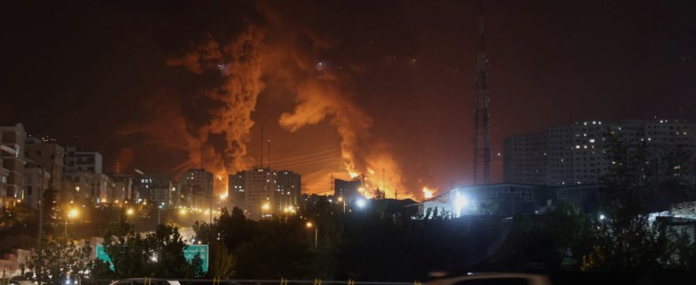
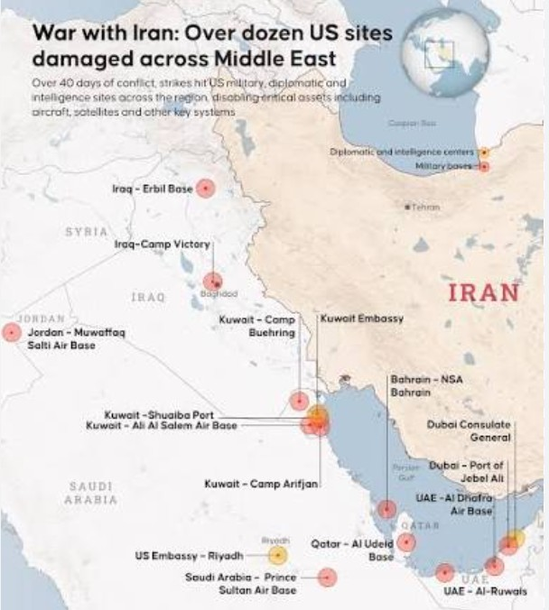
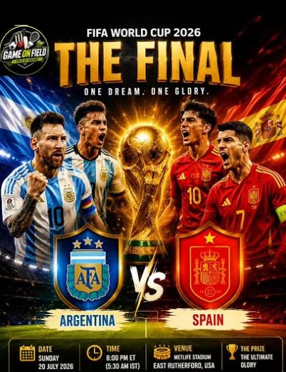
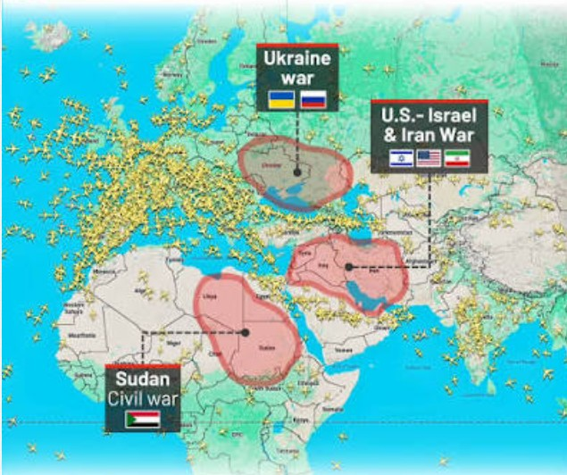

Weekend Edition · US–Iran War Widens Into Seventh Night — World Cup Final: Spain vs. Argentina — China's Kimi K3 Shakes the Chip Trade · Metro Atlanta, Georgia · July 17–19, 2026
Atlantis ITS · Metro Atlanta, GA · Est. 2006Vol. I · No. 13 · July 17, 2026news.atlantisits.info
Vol. I · No. 13Atlantis Intelligence Technology Solutions · Metro AtlantaJuly 17, 2026
The Atlantean Chronicle
"Where the signal rises above the noise"
Metro Atlanta, GeorgiaWeekend Edition — July 17–19, 2026Iran War Widens · World Cup Final · Kimi K3
This Week
US–Iran war widens — seventh straight night of US strikes; Iran fires on Gulf allies500+ feared dead in two shipwrecks off Myanmar since late June — IOM and UN refugee agencyWorld Cup final set — Spain vs. Argentina, Sunday at MetLife Stadium, New JerseyWoman shot and killed at a Gainesville convenience store — gunman still at largeChina's Moonshot ships Kimi K3, the world's largest open model — chips tumble on the shockCanadian wildfire smoke blankets 18 states — 100M+ under air alerts; Milwaukee hits record AQI 644
International · World Affairs
US–Iran War Widens — Seventh Straight Night of Strikes; At Least 8 Killed in Hormozgan ● Ongoing Iran Fires on Gulf Allies — Jordan & Kuwait Intercept Missiles, Hormuz Traffic Chokes · See Full Coverage Below
No Off-Ramp: The Iran Ceasefire's Collapse Hardens Into Open War as U.S. Strikes Enter a Seventh Night
A week after President Trump declared the truce "over," the confrontation has become a sustained air war. Iranian state media reported at least eight dead and 20 wounded in overnight strikes on bridges in Hormozgan province, while Iran's return fire drew in Jordan, Kuwait, Bahrain and Saudi Arabia — and shipping through the Strait of Hormuz slowed to a trickle.
By The Chronicle International Desk · July 17–19, 2026
What was a fragile, on-paper ceasefire only two weeks ago has hardened into a sustained military campaign. By Friday the US military had carried out its seventh consecutive night of strikes on Iran, and Tehran's response had widened the conflict across the Gulf. Iran's state-run news agency reported that at least eight people were killed and 20 injured after overnight strikes hit bridges in Hormozgan province, the coastal region that fronts the Strait of Hormuz — the latest in a target set that Iranian officials say has included a railway station and civilian infrastructure.
The escalation has pulled in Iran's neighbors. Jordan's air defenses intercepted roughly 10 Iranian missiles early Saturday; Kuwait's defenses also engaged incoming fire, and Bahrain and Saudi Arabia issued shelter-in-place warnings for residents. A senior Iranian military adviser warned that the United States could face a "full-scale offensive" in the coming days if the barrage continues through the weekend — rhetoric that, whatever its credibility, signals no near-term appetite for de-escalation on either side.
The economic chokepoint remains the Strait of Hormuz. Only six vessels transited the strait in the past 24 hours, a striking contraction of a passage through which roughly 20% of the world's oil moved before the war. Tanker owners, insurers and Gulf energy exporters are all now pricing the possibility of a prolonged closure, and crude markets have moved sharply in response — the single clearest transmission line from the conflict into the global economy.
Diplomacy has not vanished, but it has thinned. The Qatari-mediated channel that produced last month's short-lived memorandum is reportedly still open, and both governments have at times signaled a willingness to keep talking. For now, though, the talking is being drowned out by the strikes. Each night that the campaign continues raises the risk of a miscalculation — a downed civilian aircraft, a hit on a Gulf oil terminal, a strike that kills foreign nationals — that could convert a bilateral war into a regional one.
For businesses with any exposure to the Gulf — energy, shipping, aviation, or the supply chains that depend on them — the operative posture is no longer "monitor for resolution" but "plan for duration." The Chronicle's Travel desk details the airspace and carrier fallout below; the Oracle prices the odds of a clean Hormuz reopening. Both point the same direction: this is now a standing condition, not a passing headline.

The Strait of Hormuz has become the war's economic fulcrum. Iran's strikes on Hormozgan bridges killed at least eight overnight as the US campaign entered its seventh night.

The war spread across the Gulf this week: Jordan intercepted about 10 Iranian missiles early Saturday, Kuwait's defenses engaged incoming fire, and Bahrain and Saudi Arabia warned residents to shelter in place — drawing Iran's neighbors directly into the confrontation.
The War Spreads: Gulf States Drawn In as Iran's Return Fire Reaches Jordan, Kuwait and the Peninsula
The Chronicle International Desk · July 17, 2026
The most consequential shift this week was geographic. Where the June exchanges were largely a US–Iran affair, Iran's retaliatory barrages have now reached the wider Gulf. Jordan reported intercepting roughly 10 Iranian missiles early Saturday; Kuwait's air defenses engaged incoming fire; and both Bahrain and Saudi Arabia issued shelter-in-place guidance to residents — a measure of how close the fighting has come to major population and energy centers.
Each new participant raises the stakes of a wider war. The Gulf monarchies host US military infrastructure and move much of the world's crude, and a direct hit on any of them — intended or errant — would test alliance commitments and insurance markets alike. For now the interceptions have held, but the margin for error narrows with every night the campaign runs.
Myanmar, Britain, and the Wider World in Brief
The Chronicle International Desk · July 17–19, 2026
Myanmar. More than 500 people are feared dead after two large shipwrecks off Myanmar's coast since late June, according to a joint statement from the International Organization for Migration and the UN refugee agency — one of the deadliest maritime disasters in the region in years, and a grim marker of the displacement driving people onto unsafe boats.
United Kingdom. Britain is completing its transition to a new prime minister after Sir Keir Starmer's June resignation, with former Greater Manchester mayor Andy Burnham the presumptive successor as the Labour leadership contest closes. The turnover leaves the UK on course for its seventh prime minister in a decade — the highest churn in nearly two centuries.
Energy. Global oil prices climbed again this week as the Hormuz squeeze deepened, with the risk premium now a fixture rather than a spike. Analysts warn that a sustained closure — not merely the threat of one — would ripple into fuel, freight and inflation data worldwide.
Geopolitical Indicators
US strikes on Iran (Jul 17)7th consecutive night — 8+ killed in Hormozgan
Gulf allies drawn inJordan/Kuwait intercept; Bahrain, Saudi shelter
Hormuz shipping▼ ~6 vessels/24h — ~20% of world oil at risk
Qatar-mediated talksChannel open — but drowned out by strikes
National · US Affairs

The tournament now heads to its finish: Spain vs. Argentina at MetLife Stadium in New Jersey on Sunday, July 19, at 3 p.m. ET.
World Cup Final Set — Spain vs. Argentina on Sunday After Atlanta Closes Out Its Tournament Run
The Chronicle National Desk · July 17–19, 2026
The 2026 World Cup has come down to two: Spain and Argentina meet in the final at MetLife Stadium in East Rutherford, New Jersey, on Sunday, July 19, at 3 p.m. ET. Spain booked its place with a 2–0 win over France, while reigning champion Argentina edged England 2–1 — the last of Metro Atlanta's eight matches, played at Mercedes-Benz Stadium before the tournament moved north. The final pits Spain's midfield control, anchored by Rodri and 18-year-old Lamine Yamal, against an Argentine side still orbiting Lionel Messi and Lautaro Martínez. Prediction markets lean Spain (see Oracle's Corner); more than $4 billion has traded on the winner market, the largest Polymarket has ever run.
Smoke Over the North: Canadian Wildfires Choke U.S. Air Quality
The Chronicle National Desk · July 14–18, 2026
A vast plume of Canadian wildfire smoke pushed more than 100 million Americans in 18 states under air-quality alerts this week. Milwaukee recorded its worst reading on record — an air-quality index of 644, more than double the prior record — and Detroit neared 570. Canada has seen some 3,500 fires burn more than 6 million acres this summer, with fresh clusters flaring in Ontario near the Minnesota border. Relief was forecast to arrive over the weekend as winds shift.
Washington in Brief — A Live Fed, ICE Under Scrutiny, and a Paywalled President
The Chronicle National Desk · July 13–18, 2026
The July 29 FOMC meeting looms as a genuine coin-flip on a rate hike — a debate that would have been unthinkable six months ago (see Markets and Oracle). Elsewhere, ICE operations drew mounting scrutiny after agents were involved in the deaths of three men in a single week, and court filings alleged that Medicaid officials improperly shared data on millions of people with ICE, which in turn shared it with an analytics contractor. And President Trump's Truth Social said it would begin charging for high-speed access to his posts, including statements touching national security and markets — a monetization move with no clear precedent for presidential communications.
Also this week: DNI nominee Jay Clayton declined, at his confirmation hearing, to answer a senator's question about the results of the 2020 election; and Sen. Mitch McConnell said he was recovering after a fall and a bout of pneumonia.
Markets at a Glance — Week of July 13–17, 2026 (Friday Close)
Semiconductors▼ Sold off hard on China's Kimi K3 "DeepSeek shock"
TSMC▲ Q2 revenue ~$39.6B, +36% YoY on AI-chip demand
Fed — July 29 FOMCHike odds ~46% CME / ~36% Kalshi — debate is hike vs. hold, not cut
Local — Gainesville Times & North Georgia
Deadly Convenience-Store Shooting in Gainesville — Gunman at Large; Spring Street Arson Charged
Gainesville & Hall County · July 16–17, 2026
Gainesville was shaken by two acts of violence in as many days. Late Thursday, July 16, a woman was shot and killed inside the Subhannallah Food Mart on Mountain View Road; deputies said the gunman remained at large Friday morning and asked the public for tips. In a separate case, a Gainesville man was charged with arson and assault after a Spring Street fire on July 16. Local authorities urged residents to come forward with any information that could aid the investigations.
Courthouse Site Comes Into Focus — Residents Press Commissioners on the Midtown Land Buy
Hall County Government · July 15, 2026
The question of where Hall County will build its expanded judicial complex sharpened this week. Although commissioners have not formally voted on a location, Commissioner Jeff Stowe told residents that the county's recent Midtown land purchase points to where the project is heading. Some residents pushed back, telling the board it felt as though "the decision has already been made." The exchange follows the July 8 town hall on the Judicial Complex Expansion — a longer-range plan to relieve pressure on aging court facilities — and keeps siting, scope and cost on the public agenda ahead of any funding vote.
Food Truck Friday Rolls On — and a Reminder in the Mailbox
City of Gainesville & Hall County · July 17, 2026
Amid a heavy news week, Gainesville's popular Food Truck Friday series returned July 17 on the downtown square, a warm-weather staple that continues to draw crowds through the summer. Property owners, meanwhile, should keep an eye on the mail: the Hall County Tax Assessors' Office sent 2026 Notices of Assessment earlier this month, on July 6, and the appeal window runs on a fixed clock from the notice date — worth a look now rather than later for anyone weighing a challenge.
Travel & Mobility · Advisory

The Iran war has hollowed out Gulf air travel. EASA is advising operators to avoid the airspace of Iran, Iraq, Lebanon — and now Bahrain, Kuwait, Qatar, the UAE and parts of the Gulf of Oman — while carriers extend cancellations into the fall and beyond.
Gulf Airspace Closes In: The Iran War Reroutes Global Aviation and Pushes Advisories to Level 4
The Chronicle Travel Desk · July 14–18, 2026
What happened: The renewed war has produced the sharpest Middle East aviation disruption in years. EASA's conflict-zone bulletin advises operators to avoid Iranian airspace (the Tehran/OIIX FIR) at all altitudes, and now recommends avoiding the airspace of Bahrain, Kuwait, Qatar, the UAE and parts of the Gulf of Oman as well — with Iran, Iraq and Lebanon flagged through the end of August. Carriers have responded in kind: Singapore Airlines has cancelled Dubai service through October 24 and postponed its Riyadh launch to September 1, while American Airlines has pulled JFK–Tel Aviv and Philadelphia–Doha flights through the end of 2026.
Who is affected: Anyone routing through or near the Gulf. The US State Department now lists Iran, Iraq, Syria and Lebanon at Level 4 (Do Not Travel), with the UAE, Israel, Saudi Arabia, Bahrain, Kuwait, Qatar, Jordan and Oman at Level 3 (Reconsider Travel). Connections that once flowed smoothly through Gulf megahubs are being rerouted, lengthened, or cancelled outright.
What to do: Treat any Gulf-transit itinerary as volatile. Reconfirm every segment directly with the operating carrier before travel, build in wide rebooking buffers, and prefer routings that avoid the affected FIRs entirely. Register travelers in the State Department's STEP program and keep carrier advisories on watch daily.
For Atlantis clients: InteleTravel advisors should immediately audit any active booking that touches the Gulf between now and the fall, proactively contact affected clients, and document all rebooking and refund options in writing before departure. Assume schedules will keep moving.
Closer to Home: Wildfire Smoke Snarls Northern Skies as the World Cup Final Surges New York
The Chronicle Travel Desk · July 17, 2026
What happened: Canadian wildfire smoke drove hazardous air quality across 18 states this week, reducing visibility and prompting intermittent ground delays at Midwest and Northeast hubs even as the plume began to lift over the weekend. Separately, Sunday's World Cup final at MetLife Stadium will pour a demand spike into the already-busy New York–New Jersey airport complex.
Who is affected: Travelers through Chicago, Detroit, Minneapolis and the Northeast corridor faced smoke-related delays midweek; anyone flying into the New York area around July 19 should expect final-weekend congestion at EWR, JFK and LGA.
What to do: Check status the morning of travel, keep connections generous, and — for the final — build in extra ground-transit time around the stadium. Domestic disruption is easing but not gone.
Atlantis Travels · Standing Watch
Gulf: active war footing — Iran, Iraq, Syria, Lebanon at Level 4; UAE, Israel, Saudi, Bahrain, Kuwait, Qatar, Jordan, Oman at Level 3. Avoid the affected FIRs and reconfirm every Gulf segment daily. Domestic: Canadian wildfire smoke easing but still degrading Midwest/Northeast operations; New York area congested around the July 19 World Cup final. All active Gulf-transit client bookings should receive written advisory acknowledgment before departure.
🛑 Gulf & Middle East — Level 4 / Level 3
Active war footing. Iran, Iraq, Syria, Lebanon are Do Not Travel; the UAE, Israel, Saudi, Bahrain, Kuwait, Qatar, Jordan and Oman are Reconsider Travel. Airspace closures span Iran, Iraq, Lebanon plus Bahrain, Kuwait, Qatar, the UAE and the Gulf of Oman. Reroute around the region and reconfirm every segment.
🌫️ Northern U.S. — Wildfire Smoke
Air-quality disruption easing. Canadian smoke put 18 states under alerts and dented visibility at Midwest and Northeast hubs midweek. Relief arrived over the weekend, but sensitive travelers should still check AQI and airport status the morning of travel.
📋 InteleTravel Advisor Note
One dominant front. The Gulf war is the week's controlling travel risk — carrier cancellations now run into the fall and beyond. Run a booking audit this weekend, prioritize written documentation for any Gulf-transit client, and flag New York–area itineraries around the July 19 final.
🔱
Atlantis Travels · Your Next Adventure Awaits
Visit travel.atlantisits.co for all your vacation needs — rent a Rivian R1T on Turo.com, or ask about our 2, 3 & 5 bedroom suites in Gatlinburg, TN!
Technology · AI Industry
AI Frontier · Open Weights · July 2026
Beijing Answered: China's Moonshot Ships Kimi K3 — and the Chip Trade Blinks
Last week the Chronicle asked whether Beijing would answer Washington. It did — not with restrictions, but with release. On Friday, Moonshot AI unveiled Kimi K3, a 2.8-trillion-parameter open-weight model that topped a major front-end coding leaderboard ahead of Fable 5 and GPT-5.6 Sol, sent semiconductors sliding, and reopened a question Silicon Valley thought it had closed: how big is America's lead, really?
Ozzy · Architecture Analysis · July 17, 2026
2.8TKimi K3 Params · Open-Weight
#1Arena Frontend Code
Oct '26?Anthropic S-1 Prep
Gemini 3.5Delayed — Coding Miss
+36%TSMC Q2 Revenue YoY
The New DeepSeek Shock: Kimi K3 Tops a Coding Leaderboard and Rattles the Trade
Ozzy · Architecture Analysis · July 16–17, 2026
On Friday, Beijing-based Moonshot AI released Kimi K3, which the company billed as the world's largest open AI model at 2.8 trillion parameters — and, crucially, open-weight, meaning its parameters can be downloaded and run privately. Moonshot claims K3 outperforms every rival except Anthropic's Claude Fable 5 and OpenAI's GPT-5.6 Sol on overall capability, while beating Claude Opus 4.8 and GPT-5.5 on coding and general-agent benchmarks. In blind testing by the AI evaluator Arena, developers preferred Kimi over every leading US model for front-end coding — including Fable 5 and Sol — giving K3 the top spot on the Frontend Code Arena with a 76% pairwise win rate; in the broader text ranking it outranked the standard Opus 4.8 and tied Sol.
The market reaction was immediate and familiar. Semiconductors sold off hard — a rerun of the "DeepSeek shock" — on the same logic that unsettled investors 18 months ago: if a Chinese lab can reach the frontier with an open model, the premium baked into US AI hardware and the moats around US labs both look less certain. The Nasdaq fell 2.9% on the week, led by chips, even as TSMC reported blockbuster quarterly revenue up 36% year over year. Alarm registered in Washington as much as in Silicon Valley, where the durability of America's AI lead is now, once again, an open question.
Anthropic Presses Its Lead: Samsung Silicon Talks and an S-1 as Early as October
Scout · AI Intelligence · July 14–16, 2026
Anthropic spent the week converting its revenue lead into structural position. The company is reportedly in talks with Samsung to build a custom AI chip tuned to its Claude models — the same vertical-silicon path Google, Amazon, Meta and OpenAI have taken — and is said to be preparing an S-1 for an IPO as early as October, underpinned by locked-in long-term compute deals that make its revenue unusually predictable. Anthropic is now tracking toward roughly $47 billion annualized and reported profitability in 2026, on the strength of Claude Code and enterprise adoption. Separately, its Project Glasswing cybersecurity program expanded from 50 partner organizations to 150 across 15 countries, extending coverage to utilities, healthcare systems and under-resourced open-source projects.
The Field Around It: OpenAI Builds a Delivery Arm, Google Slips on Gemini 3.5
Scout · AI Intelligence · July 14–17, 2026
OpenAI kept pushing from model-maker toward end-to-end provider, launching OpenAI Deployment Co. (DeployCo) — a majority-owned consulting subsidiary with more than $4 billion in initial investment — and acquiring applied-AI firm Tomoro, whose ~150 engineers join the new unit. It also introduced GPT-Live, a full-duplex voice system that listens, speaks and reasons simultaneously, with live translation and web search mid-conversation. Google, meanwhile, delayed the broad release of Gemini 3.5 Pro after internal testing found it fell short on coding and long-horizon reasoning, keeping it in limited enterprise preview — a reminder that even the best-resourced labs can miss a beat while the frontier keeps moving in weeks.
Model Landscape · July 2026
Claude Opus 4.8 — PRIMARYAtlantis strategy route. 1M context, Dynamic Workflows. API: claude-opus-4-8. Kimi K3 edged the standard Opus 4.8 on Arena text and coding — watch the gap, hold the lane.
Kimi K3 (Moonshot) — NEW · OPEN-WEIGHTWorld's largest open model at 2.8T params. #1 on Arena Frontend Code (76% win rate), ahead of Fable 5 and GPT-5.6 Sol. Add to the sovereign/open-weight lane for local evaluation — downloadable, no export gate.
Claude Sonnet 5 — EVAL LANE"Most agentic Sonnet yet" — near-Opus capability at lower cost, built for multi-step tool use. Mid-tier routing evaluation for cheaper agentic work.
Claude Fable 5 — RESTOREDControls lifted June 30; redeployed worldwide. Still the top-ranked model on overall capability. Creative/scenario lane (Ozzy-Fable).
GPT-5.6 Sol / Grok 4.5 — TRACKEDSol (OpenAI flagship) tied Kimi on Arena text; Grok 4.5 (SpaceXAI × Cursor) ranked behind the leaders. Both tracked for comparison, neither on the Atlantis spine.
DeepSeek V4 ProAtlantis primary complex-code route. No US export-control jurisdiction over the Chinese-hosted endpoint — now joined by Kimi K3 in the open-weight column.
Local lane (Hermes + atlantis-coder)Fully sovereign. No directive — restriction or reversal — reaches a locally hosted model. The architecture argument made concrete.
Tech Watch · July 2026
Anthropic — Silicon & S-1In talks with Samsung for a custom Claude-tuned chip; reportedly prepping an S-1 for an October IPO. ~$47B annualized, profitable in 2026.
TSMC — +36% YoYQ2 revenue ~$39.6B on AI-chip demand from NVIDIA, Apple and others — the foundry underneath the whole race, even on a red week for chip equities.
OpenAI & Google — Diverging WeeksOpenAI launches DeployCo ($4B) and buys Tomoro; ships full-duplex GPT-Live. Google delays Gemini 3.5 Pro on coding/reasoning shortfalls.
Developing · Watch Next Week — Washington's Countermove? A Chinese open-weight model now tops a major coding leaderboard and just wiped billions off chip stocks — and the alarm in Washington is audible. Whether the response is fresh curbs on inbound Chinese models, new chip controls, or nothing at all is undecided. Nothing has been announced. Stay tuned to see how this one plays out.
Compiled by Scout (AI-Edge) · Data: July 17–18, 2026 · World Cup and Fed odds from live Polymarket / Kalshi / CME FedWatch; geopolitical and IPO lines are Scout estimates
SportsPolymarket
Spain Wins the 2026 World Cup (vs. Argentina, July 19)
58% — Argentina 42% · final at MetLife Stadium
Polymarket makes Spain the favorite at 58% to Argentina's 42% in Sunday's final at MetLife Stadium in New Jersey. Spain arrives on tactical control — Rodri in midfield, 18-year-old Lamine Yamal on the wing — after a 2–0 win over France; Argentina, the reigning champion, edged England 2–1 in Atlanta behind Messi and Martínez. More than $2.3M has traded on the matchup and over $4B on the winner market overall, the largest Polymarket has ever run. A tight, high-quality final that the market sees leaning Spain but far from settled.
EconomyKalshi / CME
Fed Hikes at the July 29 FOMC Meeting
~40% — ~46% CME FedWatch · ~36% Kalshi
The debate has fully inverted. Hike odds for July 29 sit near 46% on CME FedWatch and 36% on Kalshi — up from under 10% earlier this month — while a cut is priced at essentially zero. Chair Kevin Warsh's arrival flipped the number of officials projecting a 2026 hike from zero to nine in six weeks, though a softer jobs report and his guarded remarks at Sintra trimmed the odds back off their highs. Every meeting is now "live" for a hike. Watch payrolls and CPI into month-end; a hike into a chip selloff and an oil shock would be a genuine jolt.
GeopoliticalScout Est.
Strait of Hormuz Fully Open for Commercial Shipping by Aug 31, 2026
~15% — DOWN hard as the ceasefire becomes open war
A month ago a revived MOU made a clean reopening look plausible at ~38%. It has since collapsed. With US strikes in a seventh night, Iran firing on Gulf allies, and only about six vessels transiting the strait in 24 hours, a durable full reopening by month-end now looks remote — it would require both a real ceasefire and an enforceable navigation agreement, neither of which is close. The Qatari channel is open but drowned out. Upside only on a sudden, verified de-escalation; downside toward single digits on any strike that hits shipping or a Gulf terminal directly.
AI MarketsScout Est.
Anthropic IPO Prices in Calendar Year 2026
~72% — UP on reported S-1 prep for October
The estimate climbs as the pieces line up. Anthropic is reportedly preparing an S-1 for an IPO as early as October, backed by locked-in long-term compute deals that make its revenue unusually legible to underwriters, and it is now confirmed ahead of OpenAI on revenue at a ~$47B run-rate and profitable this year. With the June regulatory overhang gone and OpenAI's own listing reportedly slipping to 2027, Anthropic stands alone as the near-term frontier-AI IPO candidate. Residual risk is market conditions — a chip selloff and a live war are not an ideal tape to price a mega-IPO into — and the ever-present possibility of timing slippage.
Atlantis Edge Takeaway — Three of this week's four signals rhyme with the Atlantis thesis. The Fed market has hardened from "how many cuts" to "will they hike," keeping the cost of capital high and rewarding operators who generate cash rather than burn it. The Iran war re-priced oil and dragged the Hormuz-reopening line into the teens — geopolitical risk as a permanent line item, not a quarterly surprise. And Kimi K3 delivered the cleanest proof yet of why a multi-model, partly sovereign stack matters: the most capable open model on a major coding board now ships from Beijing, downloadable, beyond any single government's reach. Anthropic's revenue lead and IPO run validate the bet on Claude as the strategy layer, even as the field it leads gets more crowded and more open at once. The through-line is unchanged and sharper: durability comes from owning the substrate, not renting a model. And this weekend the substrate got real: after nine cycles as the single honest bottleneck, VPS Phase 1 went live — the sovereign-infrastructure gate is finally open, and the August Alpha moves from blocked to buildable.
Atlantis ITS · Operations Intelligence
V30 Active · Weekend Window · July 17–19, 2026
V30Memory Active
No. 13Chronicle Live
7 GamesEntertainment Live
CB-009Needs Review
LIVEVPS Phase 1 Online
"We don’t just create the future. We automate it."
— AtlantisITS.ai Positioning · V30 Compile · July 15, 2026
📰 Chronicle / Phase Milestone
No. 13 Published
Vol. I · No. 13 — Thirteen Straight on the Locked Template
The Atlantean Chronicle Vol. I No. 13 is live for the July 17–19, 2026 weekend — thirteen consecutive issues since the No. 6 template lock. This edition tracks the week the June restriction era's arc finally closed the other way: No. 12 covered Washington lifting the Fable 5 controls; No. 13 covers Beijing answering with Kimi K3, an open-weight frontier model that tops a coding board and rattles the chip trade. The Chronicle continues as a week-over-week intelligence layer on how the frontier picture bears on the Atlantis stack.
Build discipline holds: fresh WebSearch-sourced reporting across all seven sections, template untouched since No. 6. Target: publish to Vercel at news.atlantisits.info for the weekend audience.
🎮 Product / Entertainment
Platform Live
Atlantis Entertainment Ships — Seven Games Live at entertainment.atlantisits.ai
A third standalone consumer lane joined Pop Off and IceBreakrz this cycle: the Atlantis Entertainment platform went live at entertainment.atlantisits.ai, built end to end by Mercy-Sol. Seven table games are built and unit-tested — Klondike, Spider, Corked, Sixes Wild, Push Your Luck, Loaded and Phase Shift — with real playability and scoring bugs found and fixed along the way. Phase Shift has a full 2–6-player multiplayer architecture designed (not yet built). It is a platform in its own right, deliberately distinct from the Vineyard Nights JV, though Corked and Push Your Luck can double as venue waiting-room hooks.
V30 is the active compile — a clean cycle with full visibility into the intervening week (no blind gap). It added the Entertainment platform section, established the new FIN (Finance Policy) document category, and bumped the registry to v2.0 (structural). CB-009 — the Atlantis Commerce & Payment Platform Strategy — reached v1.2 after two full Mercy–Ozzy review passes: a Georgia single-member LLC, a single Stripe/Lemon Squeezy commerce ecosystem, and full revenue-lane mapping. It sits needs-review, pending Shane's ratification — the next control point before the LLC checklist (HT-034) begins.
🍷 Revenue / Partnership
Signature-Ready
Vineyard Nights — MOU v1.3 Ready to Sign; Whippoorwill Package Approved at v2.1
The winery joint venture is signature-ready: MOU v1.3 has all five review corrections applied, and the "Murder at the Whippoorwill Club" production package reached v2.1 — victim renamed, history claims made evidence-safe, play modes and casting guidance locked. The Phase 1A AI-suspect-chat spec was corrected before implementation handoff. One open reconciliation before signing: the MOU's $149/mo figure versus CB-008's $75/$129/$249 tiers must be squared with the venue partner, plus the detective-vs-suspect player-role decision.
🛡️ Security
Gates Open
Nova Launch Gates Unchanged — Hardening Documented, Not Yet Executed
Nova stays internal-only. The security plan is documented but saw no new execution this cycle: the HT-032 prompt-injection loop must be re-run as genuinely isolated calls, public and internal contexts separated into distinct instances, and an output-side guard added to the existing input check. Connector security (HT-033) remains a two-layer job — tool-description scanning plus code/dependency review — not yet run against any server. INC-006's unauthenticated LiteLLM route is still flagged as the bigger near-term risk. All of it stays a closed launch gate until executed.
🟢 Critical Path — Cleared
Phase 1 Live
VPS Phase 1 Goes Live — The Nine-Cycle Blocker Clears and the August Alpha Is Back in Play
After nine cycles as the single honest bottleneck, VPS Phase 1 is real: the first production cloud node — the sovereign substation the whole roadmap has waited on — was provisioned and is online as of this weekend. The two-cycle escalation is resolved, and the gate that directly threatened the August 2026 Alpha bundle is cleared. The work now shifts from “get the go decision” to execution: harden the box, stand up the Alpha stack (AAI-NOC · Council · Nova Grid · Horizon Runway · Repo Radar · Pulse · OPS), and hold the SOP-008 gates before anything faces the public internet. The bottleneck has moved from approval to deployment — exactly where it belongs.